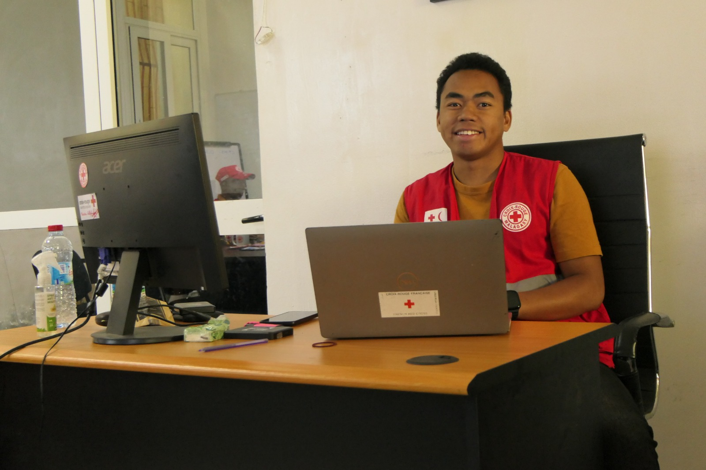
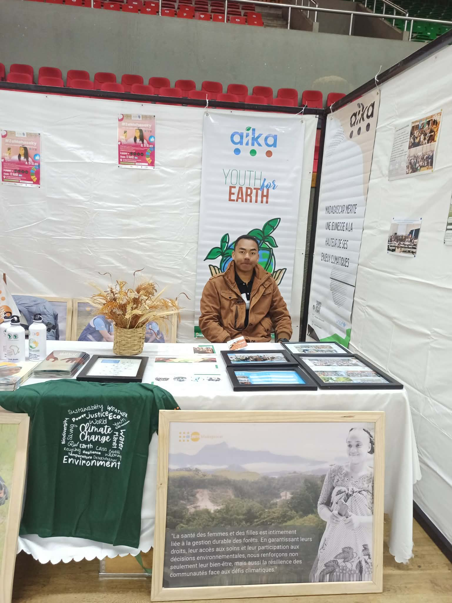
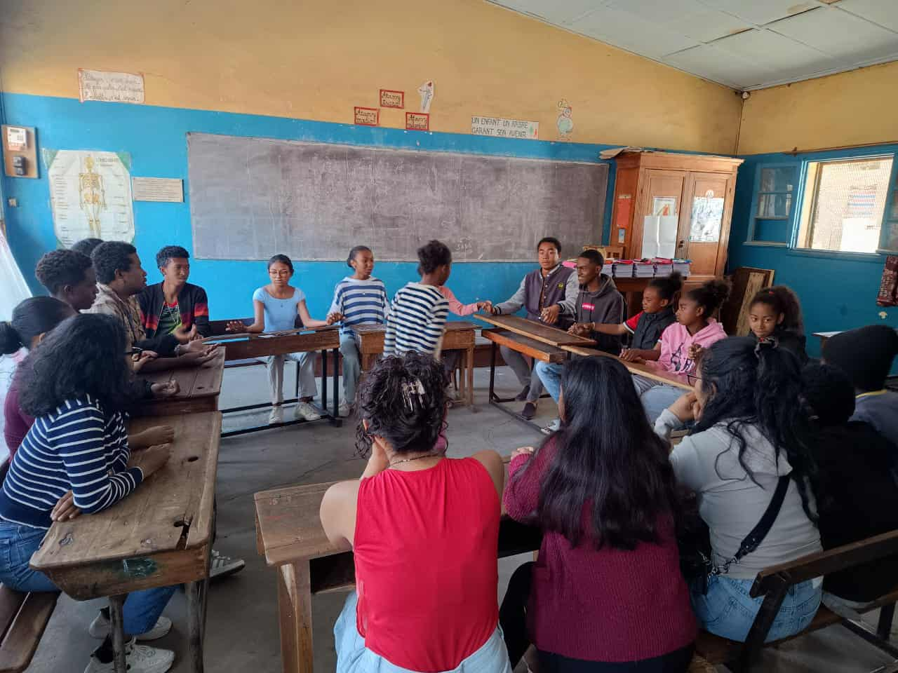
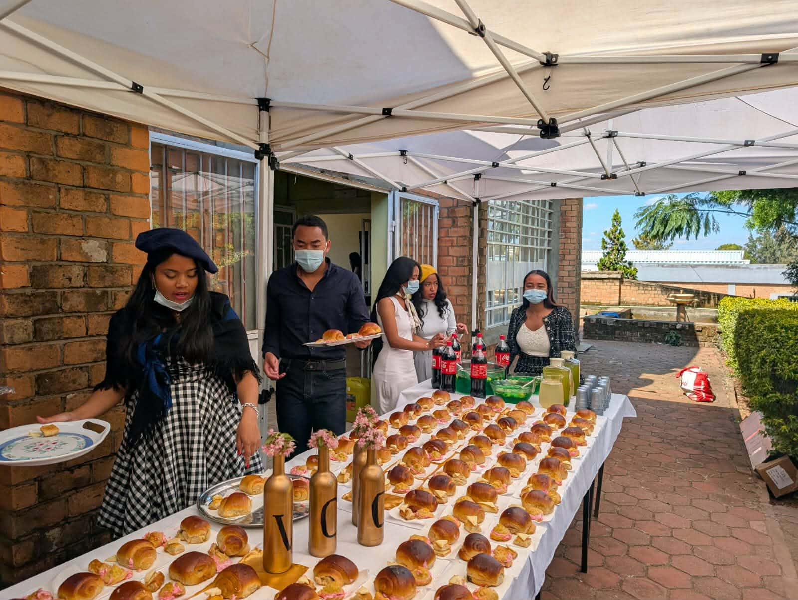
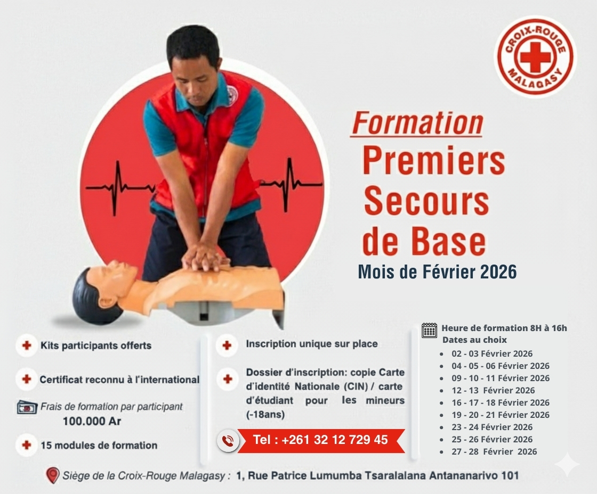
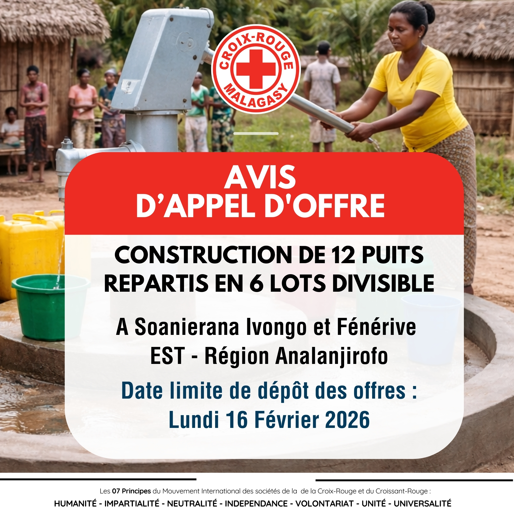
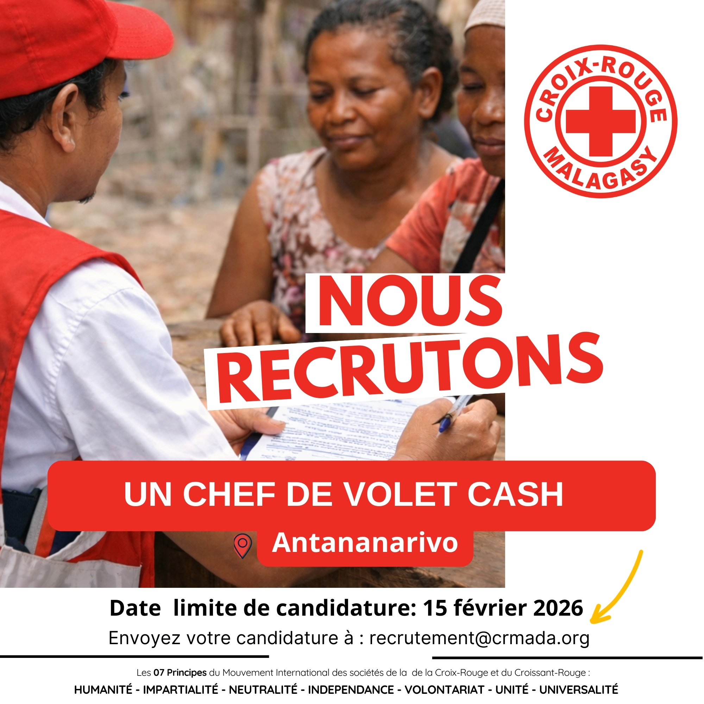

RANAIVOSON Nomenjanahary Iarantsoa
Spécialiste en communication et Web Manager
Voir mon CVPassionné par la communication institutionnelle et digitale, je crée des contenus qui valorisent les initiatives sociales et humanitaires..
De la Croix-Rouge Malagasy aux projets associatifs, j’ai animé des campagnes, documenté des actions de terrain et mobilisé des communautés.
Créatif, rigoureux et engagé, je mets mes compétences au service d’organisations qui veulent inspirer, fédérer et agir.

Création de contenus de sensibilisation sur Facebook, valorisation des volontaires, animation de campagnes humanitaires.

Animateur et chef de projet digital.

Coordinateur d’activités éducatives et mobilisations terrain.
Responsable mobilisation clients et communication multicanale.

Responsable logistique événementiel et promotion.
Chaque projet est une histoire, chaque image un témoignage, chaque vidéo une voix. À travers mes créations, je cherche à inspirer, mobiliser et valoriser les initiatives sociales et humanitaires.
Voici un aperçu de mon parcours : des vidéos qui racontent, des publications qui engagent, et des photos qui capturent l’essence des actions de terrain.
Campagne de sensibilisation
Portrait de volontaire

Affiche Croix-Rouge Malagasy

Affiche d'appel d'offre

Affiche de recrutement
N'hésitez pas à me contacter pour toute collaboration, projet ou opportunité professionnelle.
Iarantsoa Nomenjanahary RANAIVOSON Bonjour Test